Eduo transforme tes cours en outils de révision personnalisés grâce à l’intelligence artificielle : un programme jusqu’au jour du contrôle, une fiche chaque jour, des quiz, des flashcards et deux coachs pour t’accompagner.
Eduo part de ton cours, pas d’un manuel générique : chaque séance, chaque fiche et chaque question viennent de ce que tu dois vraiment apprendre.
Programmes de révision
Ton planning de révision, créé avec l’IA.
Ajoute ton cours et la date de ton contrôle. Eduo l’analyse, repère les chapitres et les notions, puis répartit des séances courtes jusqu’au jour J, selon le temps dont tu disposes chaque jour.
Une séance par jour, avec sa durée et son objectif
Bilan de départ, séances par chapitre, contrôle blanc et révision finale
Le programme s’adapte à tes résultats : une séance manquée, on repart d’aujourd’hui
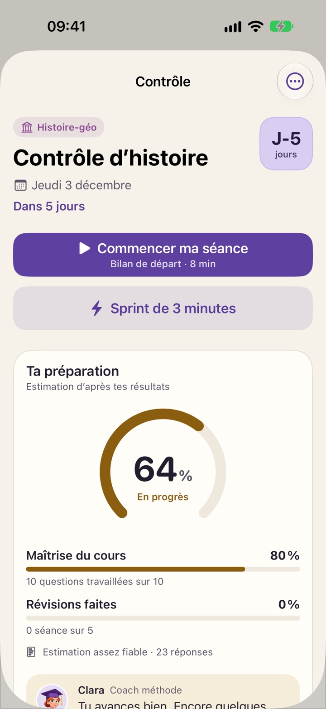
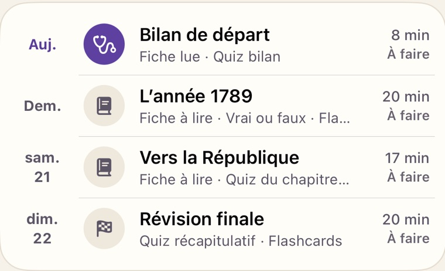
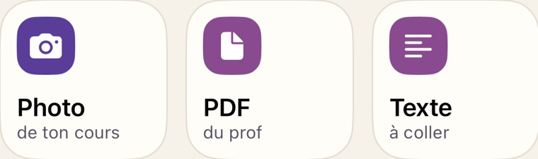
SOS Révisions
Contrôle demain ? Révise l’essentiel, maintenant.
Ajoute ton cours : l’IA en tire une session guidée, avec les notions clés, les pièges à éviter, des questions de plus en plus exigeantes et la correction de chaque erreur. Choisis la durée selon le temps qu’il te reste : 15 minutes, 30 minutes ou 1 heure.
SOS Express, Approfondi ou Intensif : 1, 2 ou 3 Toques
Chaque erreur expliquée, avec le passage de ton cours
2 SOS Express offerts chaque mois avec la formule gratuite
SOS Révisions t’aide à réviser, mais ne garantit en aucun cas une bonne note : ton résultat dépend de ton travail, de ton cours et du contrôle lui-même. Les sessions sont créées par une IA et peuvent contenir des erreurs : en cas de doute, fie-toi à ton cours et à ton professeur.
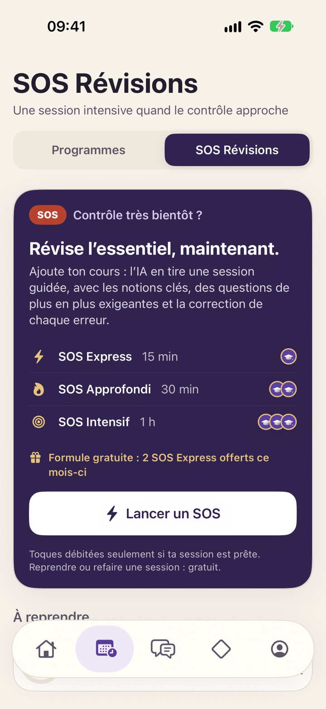
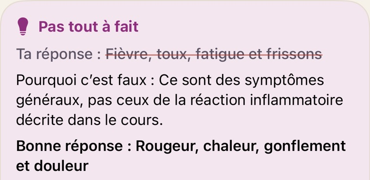
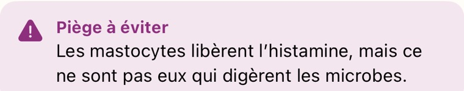
Fiches de révision
Chaque jour, l’essentiel à retenir.
Chaque séance arrive avec sa fiche, écrite à partir de ton cours et centrée sur les notions du jour : l’essentiel en quelques lignes, les notions clés, les définitions et les points à retenir.
Chaque point de la fiche est vérifié dans ton cours
Tu la marques comme lue en un geste
Toutes tes fiches restent dans ton programme
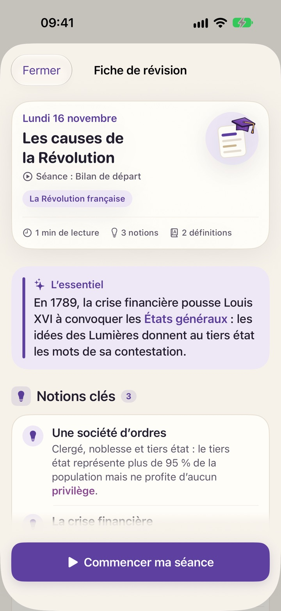
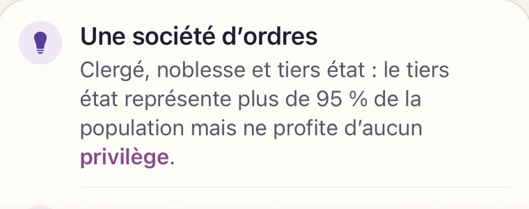
Quiz et flashcards
Apprends en t’entraînant.
Eduo transforme ton cours en questions. Tu réponds, tu vois tout de suite la bonne réponse et son explication. Pour mémoriser, retourne une flashcard, dis comment ça s’est passé : elle revient au bon moment.
Quiz, vrai ou faux et flashcards tirés de ton cours
Rejoue tes erreurs pour retravailler les notions difficiles
Sprint de 3 minutes et défi du jour
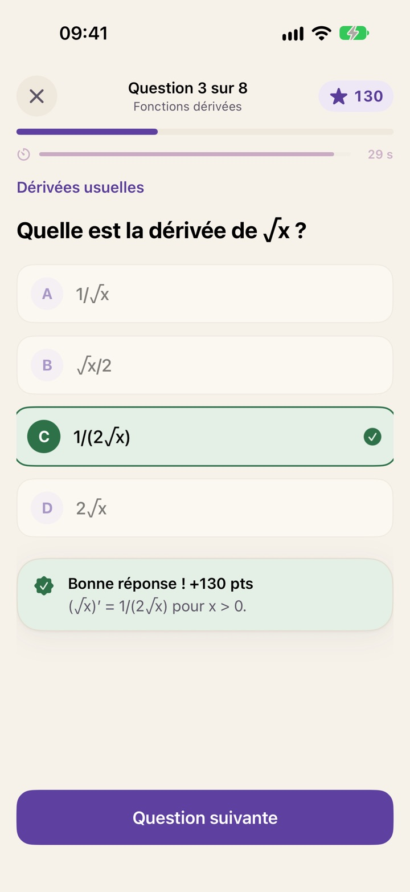
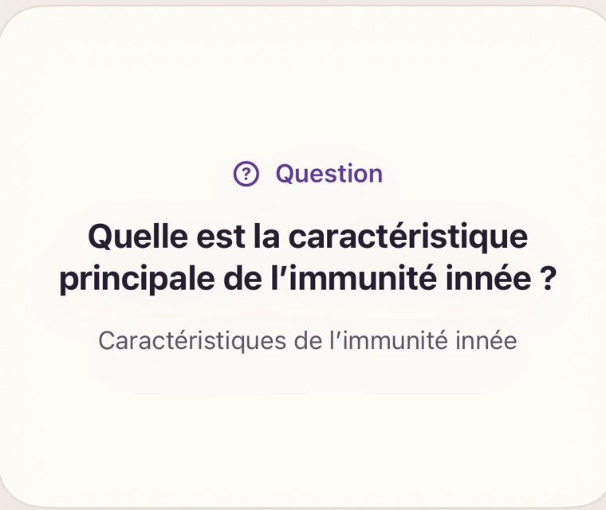
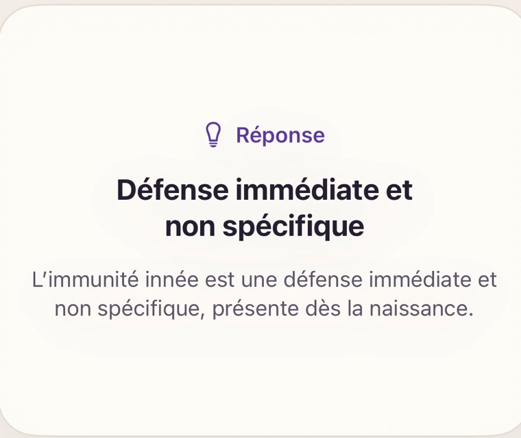
Coachs IA
Deux coachs IA pour t’accompagner.
Choisis ton coach : Clara, coach méthode, ou Adam, coach performance. Tu pourras en changer plus tard. Ton coach lit tes vrais résultats : conseil du jour, bilan, point faible, erreurs qui reviennent et « Pourquoi je bloque ? ». À la fin d’un quiz, d’une série de flashcards ou d’un duel, ton coach te laisse aussi un petit message.
Des félicitations, des encouragements ou un conseil, selon tes résultats
Des conseils pour mieux réviser, pas seulement des chiffres
Le coach complet est inclus dans Eduo Plus
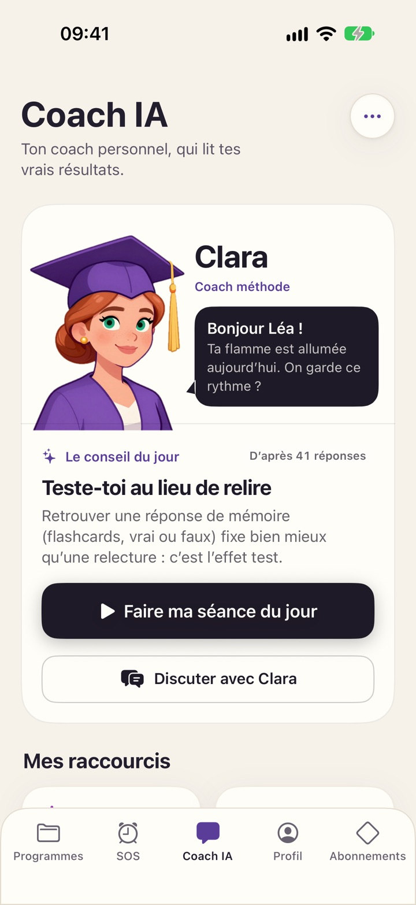
ClaraCoach méthodeAdamCoach performance
Préparation au contrôle
Sais-tu vraiment où tu en es ?
Pour chaque programme, une jauge estime ton niveau de préparation à partir de ce que tu as vraiment fait dans Eduo : tes réponses, tes flashcards, tes séances et tes fiches lues. Tu vois les notions maîtrisées, celles à travailler, et des conseils pour être prêt le jour J.
Une jauge qui évolue avec tes révisions
Les notions maîtrisées et celles à retravailler
Des conseils concrets avant le contrôle
C’est une estimation fondée sur tes résultats dans l’app, pas une prédiction de ta note ni une garantie de résultat.
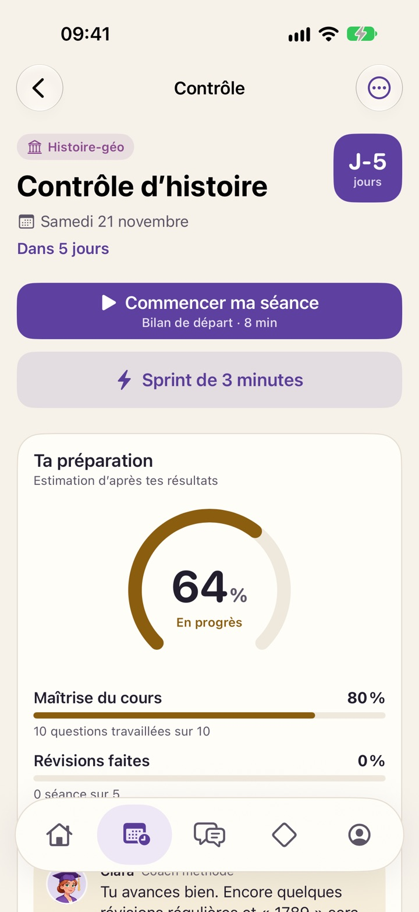
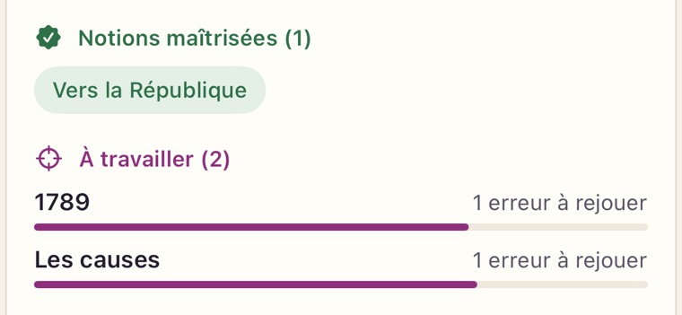
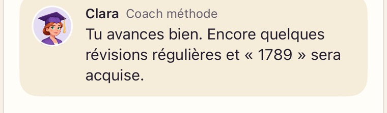
Progression et défis
Chaque effort te fait progresser.
Chaque partie te rapporte de l’expérience : tu montes de niveau, tu gardes ta série de jours de révision et tu suis ta réussite matière par matière. Et pour réviser à plusieurs, défie un ami en duel sur ton quiz.
XP, niveaux et série de jours
Réussite par matière et évolution sur 4 semaines
Duels entre amis, avec un simple lien
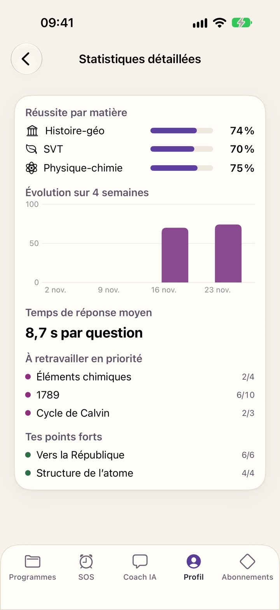
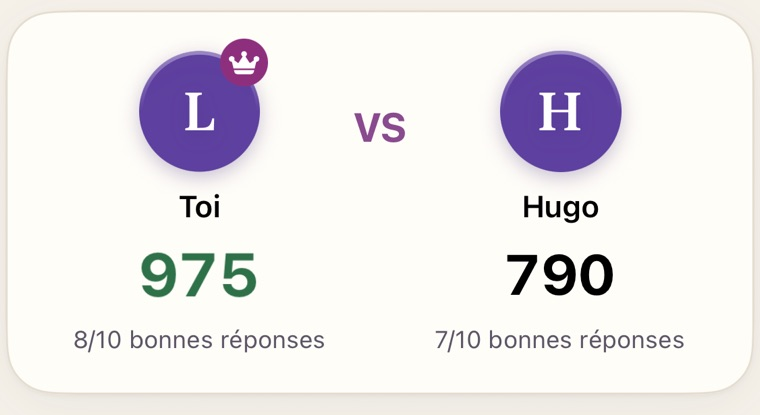
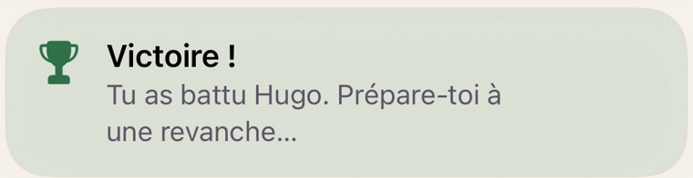
Comment fonctionne Eduo ?
Trois étapes, de ton cahier à ton contrôle.
1
Importe tes cours
Prends ton cours en photo, importe un PDF ou colle le texte.
2
L’IA prépare tes révisions
Eduo analyse ton cours et crée ton programme : séances, fiches, quiz et flashcards.
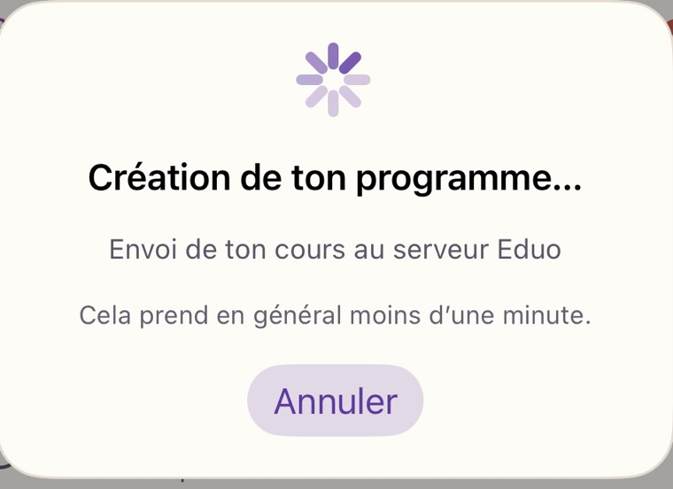
3
Entraîne-toi et progresse
Fais tes séances, suis ta préparation et arrive prêt le jour du contrôle.
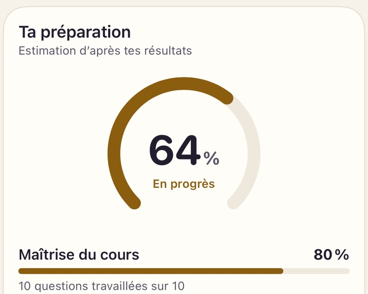
L’expérience Eduo.
Un tour de l’app, écran après écran.
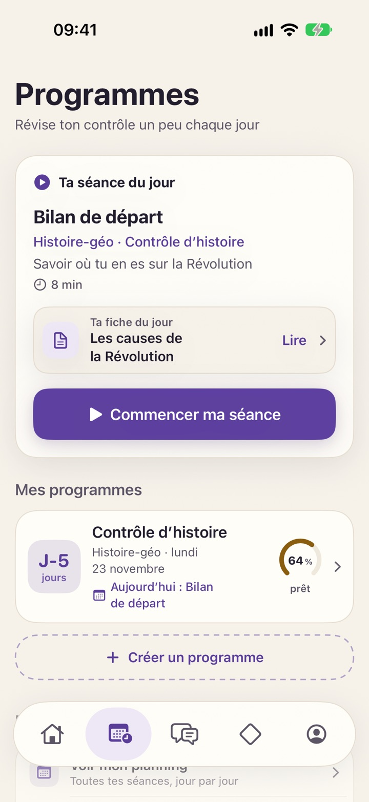
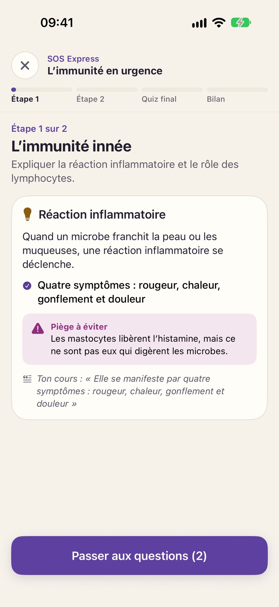
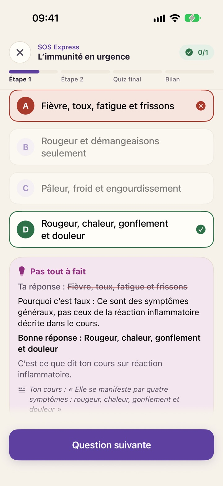
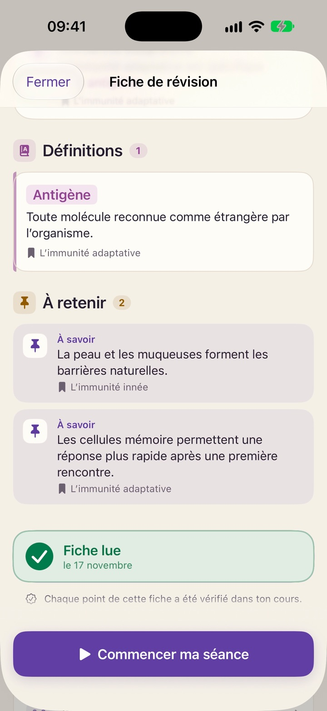
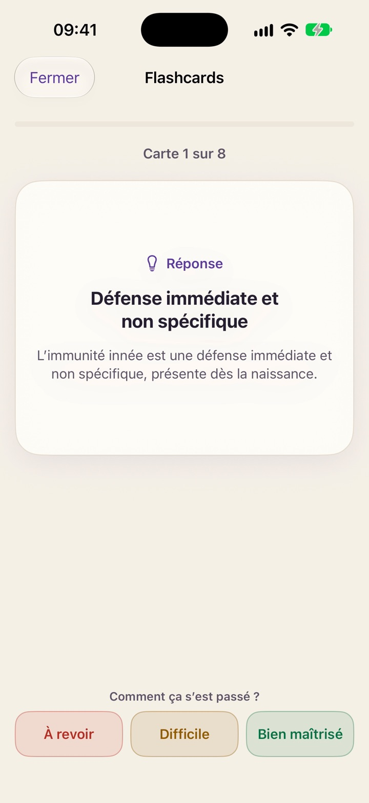
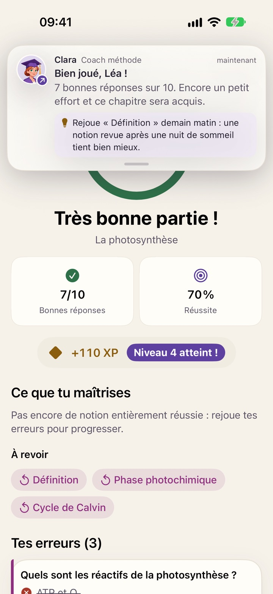
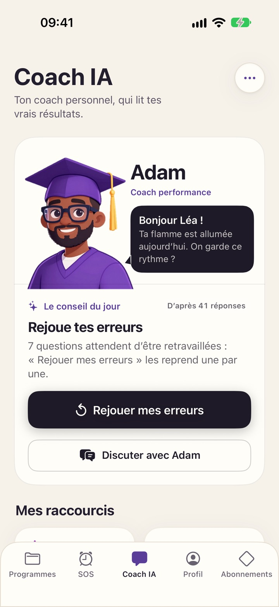
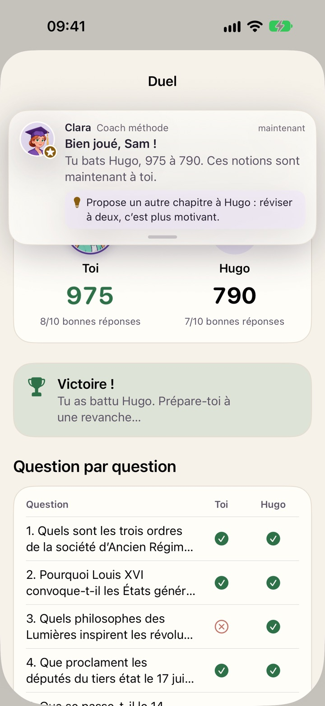
L’accueilCe que tu as à faire maintenant, en un coup d’œil.
Une idée née à 16 ans.
J’ai créé Eduo avec une ambition : aider les lycéens à mieux organiser leurs révisions et à apprendre plus efficacement grâce à l’intelligence artificielle.
D’une simple idée à une véritable application, Eduo continue d’évoluer avec un objectif : rendre les révisions plus simples, plus motivantes et plus accessibles.
Eduo arrive sur l’App Store.
Version 1.2 : Eduo sur iPad, une fiche pour chaque séance et le niveau de préparation au contrôle.
Version 1.3 : SOS Révisions, un nouvel accueil, un démarrage plus rapide et le choix de ton coach.
Questions fréquentes
Tout ce qu’il faut savoir avant de télécharger Eduo.
Qu’est-ce qu’Eduo ?
Eduo est une application de révision pour les lycéens, sur iPhone et iPad. À partir de tes propres cours, elle crée un programme de révision jusqu’au jour du contrôle, avec une fiche pour chaque séance, des quiz, des flashcards et deux coachs IA. Quand le contrôle approche, SOS Révisions te fait réviser l’essentiel en une session guidée.
L’app est en français, sans publicité et sans compte à créer.
Comment fonctionne la création de programmes ?
Dans l’onglet Programmes, touche « Créer un programme », donne un titre à ton contrôle, choisis sa date et ajoute ton cours. Tu peux aussi indiquer le temps dont tu disposes chaque jour et si le contrôle te paraît difficile.
L’IA analyse ton cours, en tire les chapitres et les notions, puis répartit les séances jusqu’au jour J. Le programme est recalculé d’après tes résultats : si tu manques une séance, il repart d’aujourd’hui.
Comment importer ses cours ?
Trois façons : prendre ton cours en photo, importer un PDF ou coller le texte.
Pour créer ton programme, ton cours est envoyé au serveur Eduo pour l’analyse, puis effacé. Si la création par l’IA n’est pas possible, « Créer sans IA » prépare des questions directement sur ton appareil.
Eduo est-elle gratuite ?
Oui, Eduo se télécharge gratuitement. La formule gratuite permet de créer 2 programmes de révision par mois, 3 quiz par l’IA par semaine et 2 SOS Express par mois.
Pour aller plus loin, tu peux acheter des Toques ou t’abonner à Eduo Plus, au mois ou à l’année : coachs IA, analyse approfondie de tes erreurs, statistiques détaillées et 25 Toques par mois. L’abonnement se résilie à tout moment dans les réglages de ton compte Apple.
Comment fonctionnent les Toques ?
Une Toque correspond à une création par l’IA : un programme ou un quiz. Une session SOS Révisions coûte 1 à 3 Toques selon sa durée. Elles ne sont utilisées que si la création réussit, et elles sont rendues automatiquement en cas d’échec. Revoir un programme, refaire un quiz ou rouvrir une session SOS déjà créée ne coûte rien.
Les Toques s’achètent par packs, de 1 à 20, sans abonnement. Elles n’expirent pas et restent liées à ton compte Apple. Avec Eduo Plus, tu en reçois 25 chaque mois.
Qu’est-ce que SOS Révisions ?
Une session intensive quand le contrôle approche. Ajoute ton cours et choisis une durée : SOS Express (15 minutes, 1 Toque), SOS Approfondi (30 minutes, 2 Toques) ou SOS Intensif (1 heure, 3 Toques). L’IA en tire les notions clés, les pièges à éviter et des questions de plus en plus exigeantes, et chaque erreur est corrigée avec le passage de ton cours. Avec la formule gratuite, 2 SOS Express sont offerts chaque mois.
SOS Révisions t’aide à réviser, mais ne garantit en aucun cas une bonne note. Les sessions sont créées par une IA et peuvent contenir des erreurs : en cas de doute, fie-toi à ton cours et à ton professeur.
À quoi servent les Coachs IA ?
Tu choisis ton coach : Clara, coach méthode, ou Adam, coach performance, et tu peux en changer plus tard. Ton coach analyse tes résultats et ta progression : conseil du jour, bilan, point faible, erreurs qui reviennent et « Pourquoi je bloque ? ». Le coach complet fait partie d’Eduo Plus.
À la fin d’un quiz, d’une série de flashcards ou d’un duel, ton coach te laisse aussi un petit message d’après tes vrais résultats.
Sur quels appareils Eduo est-elle disponible ?
Eduo est disponible sur l’App Store pour iPhone et iPad, avec iOS ou iPadOS 17 ou plus récent. L’app n’existe pas encore sur Android.
Que deviennent mes données ?
Pas de compte, pas de publicité, pas de suivi publicitaire. Tes quiz, tes résultats et tes programmes restent sur ton appareil ; tu peux tout effacer depuis les réglages de l’app.
 Eduo
Eduo